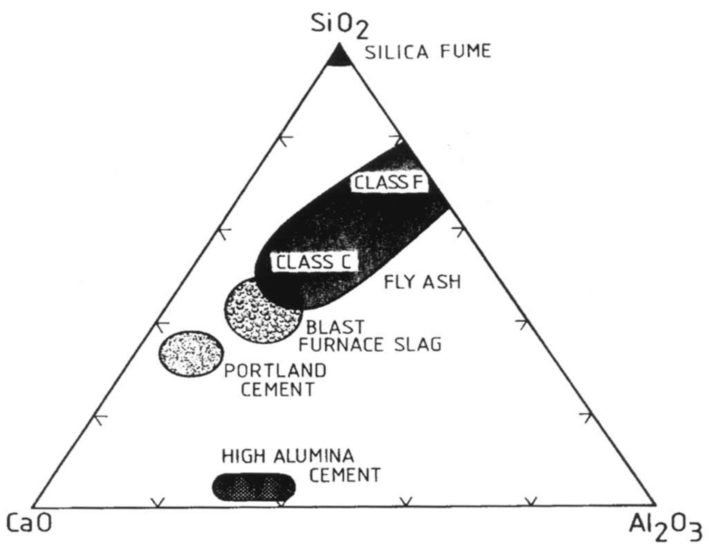
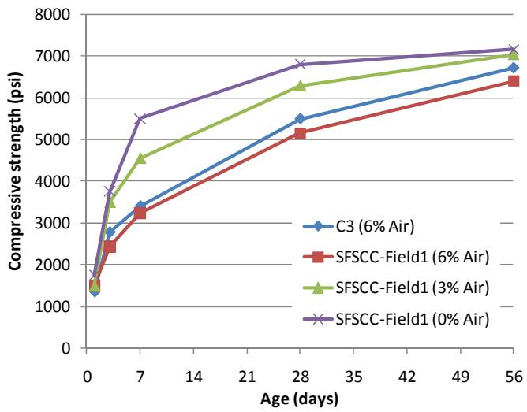
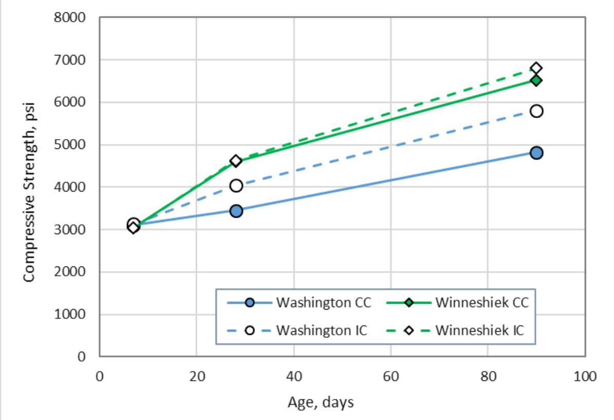
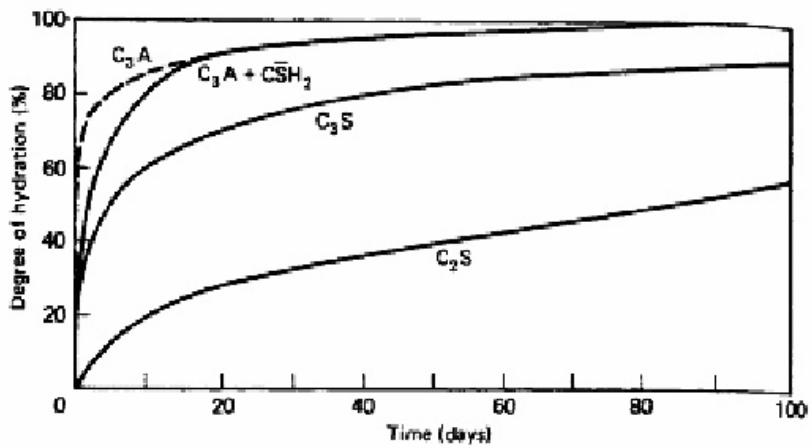
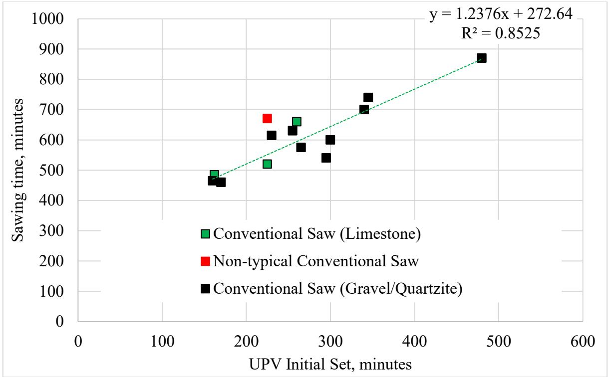
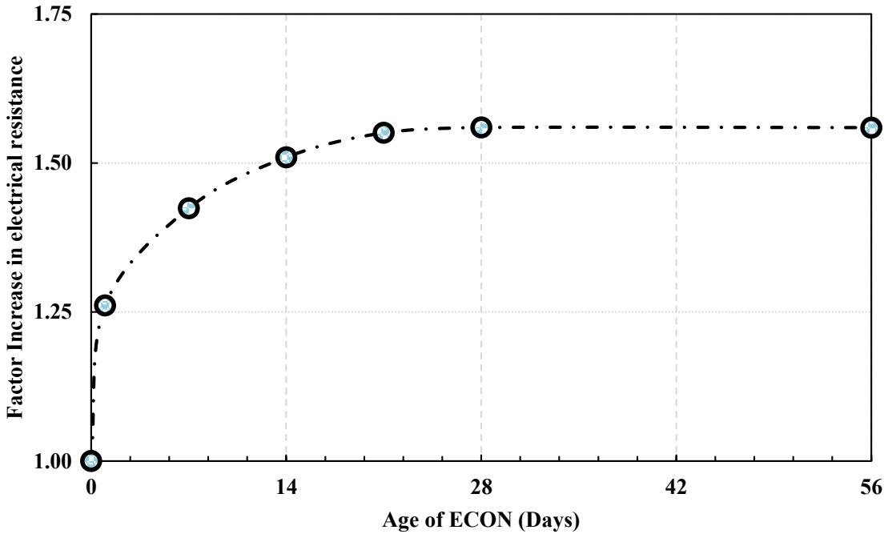

Cementitious Materials & Chemistry
Cementitious materials are hydraulic binders that harden through exothermic chemical reactions with water, producing a solid matrix primarily composed of calcium-silicate-hydrate gel and calcium hydroxide. The fundamental properties of the resulting concrete, including strength development, setting time, heat evolution, and dimensional stability, are governed by the complex interplay between binder chemistry, water-to-binder ratio, and microstructural refinement [1] [2] [3]. Modern cementitious systems often incorporate supplementary materials that undergo secondary pozzolanic or latent hydraulic reactions to consume calcium hydroxide and refine the pore structure, thereby enhancing long-term durability and reducing permeability [4] [5] [6]. The fresh-state behavior of these mixtures is controlled by rheological parameters such as viscosity and yield stress, which determine workability and uniform distribution before the onset of setting [1] [7]. Long-term performance in harsh environments depends on balancing internal porosity with an entrained air-void system to mitigate freeze-thaw damage and managing moisture availability through curing or internal reservoirs to prevent autogenous shrinkage [8] [9] [10] [6].
This overview of Cementitious Materials & Chemistry from CP Tech Center reports also covers the following subtopics: Bassanite, Blended Cement, Chemical Admixtures for Concrete, Interfacial Transition Zone, Supplementary Cementitious Materials, and Type K Shrinkage-Compensating Cement.
Cementitious Materials & Chemistry unites components that drive hydration, microstructure formation, and dimensional stability through precise chemical control. Bassanite regulates the hydration kinetics of Portland cement clinker phases by controlling sulfate availability to prevent flash setting and govern early-age strength development. Blended Cement integrates supplementary cementitious materials into the hydraulic binder matrix to modulate hydration kinetics and enhance long-term durability through refined pore structure development. Chemical Admixtures for Concrete modulate hydration kinetics and microstructural development to tailor setting times, workability, and durability within the cementitious matrix. Supplementary Cementitious Materials contribute to cementitious chemistry by reacting with calcium hydroxide during hydration to form additional calcium silicate hydrate, thereby refining the pore structure and enhancing the long-term durability of the concrete matrix. Interfacial Transition Zone governs concrete durability and permeability by defining the microstructural boundary where cement paste meets aggregate. Type K Shrinkage-Compensating Cement embodies the field’s focus on chemical interactions by using expansive reactions via Klein’s Compound to counteract volume changes and mitigate shrinkage in concrete systems.
Sources (33)
Sub-concepts (6)
Key findings
- Identified that cementitious mix chemistry, particularly water-to-cement ratio and permeability, is a key driver of long-term pavement performance, with lower w/c ratios correlating to greater durability [11].
- Demonstrated that ternary blends substantially improve concrete durability and offer life-cycle cost benefits beyond mere strength gains, though quantitative mix-design guidance remains needed for reliable specification [4].
- Observed that mineralogical composition, specifically gypsum and bassanite content variations, dominates performance variability by governing the tendency toward premature stiffening (false set) [1].
- Established that mixing energy is the primary lever for controlling cementitious material performance, with higher shear speeds or longer mixing times lowering plastic viscosity and improving paste homogeneity up to a threshold [12].
- Concluded that premature pavement distress is now driven primarily by material incompatibilities in complex cementitious systems, necessitating stage-specific test suites for effective quality control [6].
- Showed that concrete incorporating slag cement exhibits very low deicer-induced scaling when mix-design control and workmanship are tightly managed, rather than relying solely on the chemistry of the slag itself [5].
- Revealed that freeze-thaw durability in low-permeability concrete is governed primarily by the air-void system, with adequate entrained air ensuring high durability factors independent of binder composition [13].
- Determined that the chemistry of self-consolidating slip-form concrete must balance competing targets, where adding fine powders increases early strength but also raises shrinkage risks requiring mitigation strategies [7].
Mixture Design Chemistry and Performance Trade-offs
Evidence: 20 reports (17 primary)
Mixture design chemistry involves balancing the proportions of hydraulic binders, supplementary materials, water, and chemical admixtures to achieve a target balance between fresh-state rheology and hardened microstructural properties [1] [7]. The fundamental trade-off centers on the water-to-binder ratio, where lower ratios refine pore structure to enhance strength and durability but simultaneously reduce workability and increase autogenous shrinkage risks [8] [14] [15]. Supplementary cementitious materials are incorporated to mitigate these trade-offs by refining the pore structure through secondary pozzolanic reactions and modifying fresh-state behavior, though they often delay early-age strength development [4] [5] [10]. Achieving optimal performance requires coordinating the chemical composition of the binder with physical additives like air-entraining agents and superplasticizers to manage internal stresses and flow characteristics without compromising long-term durability [10] [16] [6].
The figure below illustrates the bulk chemical composition ranges for several common supplementary cementitious materials.

Bulk chemical composition ranges for some common supplementary cementitious materials (from reference 5) [4]The figure displays a ternary diagram plotting the bulk chemical compositions of various hydraulic binders based on their silica dioxide, calcium oxide, and alumina content. It visually distinguishes supplementary cementitious materials such as Class F fly ash, Class C fly ash, blast furnace slag, and high alumina cement from standard Portland cement and silica fume. Supplementary cementitious materials represent a broad class of predominately glassy materials that have been found to provide beneficial properties to portland cement concrete.
Research problem — The industry lacks reliable, performance-based specifications for ternary blends of supplementary cementitious materials because the chemical and physical variability of these by-products makes it difficult to predict interactions affecting workability, setting, strength, and durability [4] [17] [18]. Formulating cementitious mixtures requires balancing conflicting performance targets, such as the trade-off between high porosity for permeability and structural strength in pervious concrete, or between flowability and buildability in three-dimensional printing [14] [19] [7]. Chemical incompatibilities arising from mineralogical variability in raw materials and complex admixture interactions lead to premature stiffening, excessive shrinkage, and degradation of the air-void system, undermining long-term pavement durability [1] [20] [6].
The figure below illustrates how variations in the binder-to-aggregate ratio influence key performance metrics such as workability, strength, and porosity.
 Binder-to-aggregate ratio versus workability, strength, and porosity [19]
Binder-to-aggregate ratio versus workability, strength, and porosity [19]
As the binder-to-aggregate ratio increases, the data indicates a corresponding increase in both the mechanical strength of the matrix and its overall porosity.
State of the art — The field has transitioned from prescriptive volumetric proportioning to performance-based mix design, utilizing ternary blends of supplementary cementitious materials and advanced admixtures to optimize the trade-offs between durability, strength, thermal performance, and carbon footprint [4] [17] [18]. Modern practice employs multiscale modeling and rapid diagnostic tools to quantify material variability and predict fresh-state rheology alongside long-term hardened properties, enabling the development of specifications that reflect inherent statistical variability rather than binary pass/fail limits [1] [17]. Optimization strategies now integrate controlled mixing protocols, such as high-shear two-stage methods, with precise admixture dosing to balance competing requirements like workability and early-age stiffness while mitigating risks such as slump loss or premature stiffening [1] [12].
The following figure illustrates how different mixing methods influence the slump of fresh concrete.
 Effects of mixing method on the slump of fresh concrete [12]
Effects of mixing method on the slump of fresh concrete [12]
For each mixture type, the slump is plotted for three distinct mixing protocols: a standard dry batch, and two variations of slurry pre-mix with different batch durations.
Findings from the reports
- Lower water-to-cement ratios correlated with superior long-term pavement durability, as well-performing sections averaged a ratio of 0.49 compared to 0.55 for poorly performing ones [11].
- Ternary blends incorporating supplementary cementitious materials substantially improved concrete durability and offered life-cycle cost benefits, though they required quantitative mix-design guidance to resolve cold-weather placement and material variability issues [4].
- The gypsum-to-bassanite ratio governed the tendency toward premature stiffening or false set, with higher ratios mitigating this behavior by increasing penetration values and improving workability [1].
- Fly ash effectively counteracted premature stiffening by acting like a low-range water reducer, while ternary blends containing slag and fly ash enhanced long-term compressive strength and balanced opposing shrinkage effects [1].
- Incorporating ground-granulated blast-furnace slag consistently lowered the peak temperature of hydration, whereas silica fume increased heat output, reflecting a trade-off between thermal management and early-age strength development [18].
- High mixing energy produced more uniform cementitious slurries with lower plastic viscosity and higher degrees of hydration, yielding modest early-age strength gains and denser interfacial transition zones in two-stage mixing protocols [12].
- Premature pavement distress was primarily driven by material incompatibilities between high-early-strength cements and chemical admixtures, with temperature spikes serving as reliable early-warning signs of stiffening [6].
- Self-consolidating concrete formulations achieved higher early compressive strength through lower water-to-binder ratios but experienced increased autogenous and drying shrinkage that required specific admixture strategies to mitigate [7].
- Chemical admixtures designed for normal concrete were often unsuitable for roller-compacted concrete, requiring higher dosages or hybrid blends to balance water reduction, cohesion, and retardation without compromising finishability [10].
- Freeze-thaw durability in low-permeability concrete was governed primarily by the air-void system when air entrainment was present, whereas mixes without air entrainment required ultra-low water-to-binder ratios and exceptionally high compressive strengths to achieve similar resilience [13].
- Air entrainment in pervious concrete densified the paste matrix, reduced overall porosity, and markedly improved freeze-thaw resistance while maintaining hydraulic capacity [19].
- Substituting Portland cement with supplementary materials altered the pore structure of pervious concrete, creating a trade-off where slag replacement increased hydraulic conductivity but reduced mechanical strength and contaminant removal capacity [15].
- Cementitious material selection dominated the performance envelope of 3-D printed concrete, with silica fume and viscosity-modifying agents improving buildability at the cost of flowability, leading to pronounced anisotropy in mechanical properties [14].
- Performance-based specifications enabled agencies to reduce cement content and lower carbon emissions while meeting durability targets, but field cores often revealed marginal air-void characteristics that undermined these predictions [21].
- Fly ash incorporation in modified mixes significantly reduced calcium oxychloride formation compared to conventional cementitious blends [20].
- Secondary ettringite growth filled fine entrained air voids, effectively halving the usable air volume and compromising freeze-thaw resistance in jointed pavements [16].
- Statistical and neural-network models incorporating water-to-binder ratio, unit weight, cementitious material factor, and age predicted 28-day compressive strength with high accuracy (R² up to 0.88), confirming the strong influence of mix chemistry on performance [3].
- Measured joint activation varied widely depending on joint spacing and fiber use, with smaller spacings sometimes resulting in only half of joints activating despite design expectations [22].
Novelty & rigor — Research has shifted from prescriptive mix specifications to performance-based frameworks that link early-age cementitious chemistry directly to long-term durability and sustainability outcomes [21] [17]. Novel methodologies integrate large-scale experimental matrices with statistical modeling to predict the complex interactions of ternary blends, while advanced rheological tools enable real-time quality control and optimization of mixing efficiency [1] [18]. Reproducibility is achieved through standardized protocols that combine rigorous material characterization with field-deployable testing platforms to validate mix designs under realistic construction conditions [4] [6].
Reported values
| Parameter | Value | Context | Source |
|---|---|---|---|
| air content | > 6% | evaluating air entrainment in concrete | [13] |
| compressive strength | 82 MPa (11,880 psi) | concrete made with IP cement | [13] |
| calcium hydroxide content | 1 g per 100 g powder g/100 g | threshold for calcium oxychloride formation potential increase | [21] |
| backcalculated effective thickness | 10.8 in. | overlay with underlying pavement contribution | [22] |
| compressive strength improvement | 5-10 percent% | two-stage mixed concrete compared to conventionally-mixed concrete | [12] |
| compressive strength (parallel to filaments) | 44 MPa | printed samples loaded parallel to printed filaments at 28 days | [14] |
| b/a ratio threshold | 19% | pervious concrete mix design | [19] |
| 28-day compressive strength | 1858 psi | pervious concrete mix with 15% slag replacement | [15] |
| average resistivity | 26.8 kohm-cm | cast samples at 56 days | [20] |
| cement content reduction | 24% | due to use of slag and addition of coarse aggregates | [7] |
| water reduction | 0-30% | admixtures tested in roller-compacted concrete (RCC) | [10] |
| water-to-cement ratio | 0.49 | sections that remained in good condition after more than 20 years | [11] |
| air content | 5% | marginal factor for distress in concrete pavements | [16] |
| 28-day compressive strength | 4,710 psi | binary mixture containing PC and 20% Class C fly ash | [18] |
| 28-day compressive strength | 4,397 psi | mean value of the 28‑day core compressive strength after the year of 2000 | [3] |
98 more distinct values omitted here; the full span-verified set is in the quantities sidecar.
Across the reviewed reports, optimizing cementitious mixtures for durability and performance requires navigating a complex trade-off landscape where lower water-to-binder ratios and supplementary cementitious materials enhance long-term resistance but often compromise early-age strength, workability, or dimensional stability. While ultra-low water-to-binder ratios and high compressive strengths can achieve freeze-thaw durability in the absence of air entrainment, incorporating an adequate air-void system provides a more robust and less chemically sensitive path to resilience against cyclic freezing. The integration of supplementary cementitious materials introduces significant variability in sulfate mineralogy and hydration kinetics, necessitating precise control over gypsum-to-bassanite ratios and mixing energy to mitigate false set while balancing the opposing shrinkage effects of different binder types. Achieving specific functional requirements, such as high permeability in pervious concrete or extrudability in 3D printing, demands targeted rheological adjustments that frequently create inverse relationships between hydraulic conductivity, mechanical strength, and shape stability. [13] [1] [12] [14] [15] [20] [7] [11] [6] [18]
The following figure illustrates the strength development of SFSCC and C3.

Strength development of SFSCC and C3 [7]The figure plots the compressive strength in psi against age in days for a standard concrete mixture (C3) and three variations of silica fume self-consolidating concrete (SFSCC) with varying air contents. This illustrates how the integration of supplementary cementitious materials and entrained air systems influences the mechanical properties and durability trade-offs inherent in modern concrete mixtures.
Implications — Designers must transition from isolated material checks to integrated, data-driven quality control systems that monitor mineralogical uniformity and fresh-state properties in real time to prevent premature stiffening and ensure long-term durability [1] [6]. Optimizing ternary blends requires balancing the thermal and rheological trade-offs of supplementary cementitious materials against early-age strength and workability demands through predictive modeling and targeted admixture selection [4] [18]. Achieving durable concrete joints and pavements necessitates treating water-to-binder ratios, air-void architecture, and permeability as interdependent variables rather than isolated factors to mitigate freeze-thaw damage and chemical exposure [11] [16]. High-energy mixing protocols can enhance microstructure and reduce permeability but require recalibration of air-entrainment dosages and equipment selection to balance workability gains against potential defects [12].
The impact of these processing variables is illustrated in the figure below, which demonstrates how different mixing methods influence the air content of fresh concrete.
 Effects of mixing method on the air content of fresh concrete [12]
Effects of mixing method on the air content of fresh concrete [12]
The data indicates that the conventional mixing method generally yields higher air content compared to the two-stage premixed concrete samples.
Limitations — The ability to link observed long-term performance to binder chemistry is constrained by data gaps regarding subgrade materials, construction testing records, and longitudinal structural capacity measurements [11]. Confidence in ternary blends is limited by the variability of supplementary cementitious materials, a lack of performance-based specifications, and prescriptive codes that restrict adoption without further experimental validation [4]. Mixing strategies such as two-stage mixing introduce trade-offs in air content and chloride permeability, while field trials are often compromised by confounding variables that prevent generalization to broader applications [12]. Current test procedures lack sufficient precision for formal acceptance criteria, and key performance measurements suffer from bias or limited specimen counts, introducing uncertainty about their applicability [6]. Systemic issues including unfavorable economics, intrinsic shrinkage tendencies, elevated chloride permeability, and a lack of dedicated placement equipment temper the practical deployment of advanced concrete formulations [7]. Observed benefits are tightly bound to laboratory conditions and specific dosage levels calibrated for conventional mixes, leaving open questions about combined admixture systems and field translation [10]. Experimental programs conducted under controlled laboratory conditions limit the practical relevance of derived water-to-binder ratios and durability correlations, particularly for air-entrained concretes where predictive models may break down [13]. Conclusions on curing methods, deicer interactions, and the use of air-entraining agents remain provisional due to a lack of field validation and unresolved debates regarding material durability mechanisms [19]. Laboratory mix design tests prove less valuable as on-site quality-control tools, and the link between measured chemical quantities and actual field performance remains uncertain without further research [20]. Small sample sets and ambiguous sources of sulfates limit generalization, while the absence of reliable in-situ saturation measurements hinders the assessment of ettringite’s impact on air-void performance [16]. Divergent porosity measurement methods and small experimental programs create ambiguity in void-size distributions, while limited data prevents confident extrapolation of strength-permeability trends to field conditions [15]. Achieving a balance between flowability and shape stability is highly sensitive to admixture dosages, and printed materials exhibit weak inter-filament bonds and anisotropic behavior that lower structural reliability [14]. Durability and fresh-mix metrics are highly sensitive to ancillary factors such as sample geometry and storage conditions, while inconsistent data from labor-intensive tests undermines confidence in predictive correlations [21]. Conclusions are heavily qualified by a paucity of region-specific data and the omission of key variables such as aggregate type and curing regimes, preventing robust regression modeling for design purposes [3].
Shrinkage Control and Volume Stability
Evidence: 6 reports (5 primary)
Shrinkage and volume instability in cementitious systems arise from distinct mechanisms, including capillary stresses during the plastic stage, moisture loss-induced drying shrinkage in hardened concrete, and early-age thermal gradients that cause curling [23] [24]. Autogenous shrinkage is driven by self-desiccation as hydration consumes internal water, lowering relative humidity and halting reactions if external moisture is unavailable [9] [25]. Internal curing mitigates these volume changes by incorporating pre-saturated reservoirs within the matrix that release water gradually to sustain hydration and maintain internal humidity without altering the mix’s effective water-to-cement ratio [26] [9].
The figure below illustrates the mechanisms of external and internal curing used to mitigate these volume changes.
 Comparison of external and internal curing mechanisms in cementitious specimens. [23]
Comparison of external and internal curing mechanisms in cementitious specimens. [23]
The figure illustrates the difference between external curing, where water penetrates only a limited distance from the surface, and internal curing, which utilizes pre-saturated reservoirs to release water gradually within the matrix. The diagram depicts how external water penetration is restricted to a shallow layer, whereas internal curing zones distribute moisture throughout the specimen to prevent autogenous shrinkage.
Research problem — Low water-to-cementitious material ratios in high-performance concrete lead to self-desiccation, which halts hydration and triggers autogenous shrinkage that compromises durability and service life [23] [9] [25]. Internal curing strategies using lightweight aggregates or superabsorbent polymers face significant implementation challenges regarding moisture control variability, logistical complexity, and potential adverse effects on mechanical properties [23] [9]. Early-age thermal and chemical evolution causes curling and warping in pavements, yet the precise magnitude of these deformations and their long-term impact on structural performance remain insufficiently quantified [8] [24].
The following figure illustrates how drying shrinkage and autogenous deformation evolve differently with concrete age in conventional versus high-performance mixes following internal curing.
 Drying shrinkage and autogenous versus concrete age in conventional concrete (left) and high-performance concrete (right) after internal curing [23]
Drying shrinkage and autogenous versus concrete age in conventional concrete (left) and high-performance concrete (right) after internal curing [23]
The figure displays two graphs plotting cumulative shrinkage against concrete age, distinguishing between autogenous shrinkage and drying shrinkage. In the right graph representing high-performance concrete, a gray shaded region indicates additional total shrinkage after drying compared to conventional concrete shown on the left.
State of the art — Internal curing using pre-saturated lightweight fine aggregate or superabsorbent polymers has matured into a standard, field-validated strategy for mitigating autogenous and drying shrinkage in low water-to-cement ratio concrete systems [23] [26] [9]. Current practice is codified in specifications such as ASTM C1761 and AASHTO guidelines, which mandate rigorous quality control for aggregate prewetting or polymer absorption kinetics to ensure consistent performance [23] [9]. Beyond material-level interventions, shrinkage control is increasingly addressed through a mechanistic-empirical framework that integrates low-shrinkage mix designs with geometric optimization and high-resolution field monitoring to predict and manage curling and warping [8].
The figure below illustrates the conceptual differences in volumetric components between a standard plain mixture and one incorporating internal curing.
 Conceptual illustration of volumetric components in a plain and internally cured mixture [9]
Conceptual illustration of volumetric components in a plain and internally cured mixture [9]
The figure displays two stacked bar charts comparing the volumetric composition of conventional concrete against an internally cured mixture. Visually, the internal curing mix includes a distinct orange segment representing LWA (lightweight aggregate) at the top and shows a reduced volume for fine aggregate compared to the conventional mix.
Findings from the reports
- Internal curing lowered temperature and moisture gradients within the slab, which markedly reduced warping, curling, and early-age shrinkage cracking [23] [26] [9].
- The enhanced hydration from internal curing resulted in significantly higher compressive strengths at 90 days compared to conventional concrete mixes [26] [25].
- Internal curing improved durability indicators by lowering chloride permeability and increasing surface resistivity, reflecting a denser microstructure [26] [25].
- Superabsorbent polymers functioned as effective internal curing agents that raised the degree of hydration and substantially curtailed autogenous shrinkage in low water-to-cement ratio concrete [23] [9].
- Incorporating supplementary cementitious materials such as fly ash or slag helped limit early-age temperature gradients and associated shrinkage-driven deformation [8] [9].
- Internal curing using saturated lightweight fine aggregate sustained higher early-age temperatures for up to three weeks, which promoted continued hydration and reduced the fraction of unreacted cement [26].
- The incorporation of superabsorbent polymers introduced a network of micro-voids that modestly depressed mechanical properties, reducing compressive strength by approximately eight percent [23].
- Higher Portland cement content and lower supplementary cementitious material replacement ratios resulted in the greatest upward curling and warping in concrete slabs [8].
Novelty & rigor — The research introduces a plug-in internal curing methodology that treats lightweight fine aggregate or superabsorbent polymers as modular additives, allowing agencies to modify standard mix proportions without redesigning the entire system [9]. A key novelty is the development of contract-ready specifications and quantitative selection criteria for superabsorbent polymers, which enables dry-batching and eliminates the logistical burden of pre-saturation required by traditional lightweight aggregates [23] [9]. The approach is distinguished by its rigorous reproducibility through standardized quality-control protocols, including specific moisture conditioning procedures for aggregates and reproducible laboratory tests for polymer absorption kinetics [9].
Reported values
| Parameter | Value | Context | Source |
|---|---|---|---|
| compressive strength test age | 90 days | mixture designs with LWFA | [26] |
| initial cost increase (Washington County) | 2.3% | LWFA mixture in Washington County | [26] |
| initial cost increase (Winneshiek County) | 3.1% | LWFA mixture in Winneshiek County | [26] |
| coefficient of variation | 5.83% | single operator coefficient of variation of a single test result for SAP absorption | [9] |
| internal curing aggregate dosage | 30% | IC mix | [25] |
| service life extension | 20 years | IC section compared to control section | [25] |
The following figure illustrates the compressive strength test results associated with these parameters.

Compressive strength test results [26]The figure plots compressive strength in psi against age in days for concrete mixtures incorporating LWFA, comparing Washington and Winneshiek County designs under both control (CC) and internal curing (IC) conditions. The data represent an average of three samples, showing that using LWFA improved the compressive strength of both mixture designs, particularly at 90 days. This demonstrates how supplementary cementitious materials and internal curing strategies influence the long-term mechanical performance governed by hydration kinetics.
Across the reviewed reports, internal curing strategies using lightweight aggregates or superabsorbent polymers effectively mitigate autogenous and drying shrinkage by sustaining hydration and reducing early-age moisture gradients. While these internal curing methods significantly reduce warping and curling stresses, they present a trade-off where lightweight aggregates maintain mechanical properties whereas superabsorbent polymers introduce micro-voids that modestly depress compressive strength. Conversely, binder chemistry serves as a primary lever for controlling curling and warping, with higher Portland cement content exacerbating deformation while supplementary cementitious materials help limit shrinkage-driven curvature. [8] [23] [26] [9]
The following figure illustrates the resulting concrete slab warping and curling associated with these shrinkage mechanisms.
 Concrete slab warping and curling [26]
Concrete slab warping and curling [26]
The figure illustrates two distinct modes of concrete slab deformation: upward curling, where the surface is cooler and drier than the base, and downward curling, where the surface is at a higher temperature and moisture content. These deformations are caused by internal gradients resulting from the exothermic chemical reactions of cement hydration and subsequent drying processes.
Implications — Designers must integrate internal-curing strategies, such as pre-wetted lightweight aggregates or superabsorbent polymers, into mix specifications to sustain hydration and reduce early-age shrinkage stresses, while carefully balancing the resulting trade-offs in strength loss and permeability against long-term durability gains [23] [9]. Effective volume stability requires a system-level approach that coordinates binder chemistry, such as low-alkali cements and supplementary cementitious materials, with precise control of the water-to-cement ratio to avoid both drying and autogenous shrinkage extremes [8]. Construction practices must adapt by implementing stricter quality-control regimes for aggregate moisture and batching protocols, alongside environmental controls like scheduling paving during cooler periods, to mitigate thermal gradients that drive warping and curling in pavements [8] [9].
Limitations — Internal curing is recognized as an enhancement rather than a substitute for conventional workmanship, and the extent to which it reduces external curing time remains unquantified [9]. The practical deployment of lightweight fine aggregate is constrained by logistical challenges at larger scales, while performance gains are modest and lack a clear mechanistic explanation for observed reductions in slab movement [26]. Super-absorbent polymers introduce mix-design uncertainty due to unpredictable water uptake, suffer from drastically reduced absorption capacity in alkaline environments, and lack industry-wide standards for field implementation [23]. Predictions of curling and warping remain uncertain due to numerous interacting factors, curing cannot prevent deformation, and findings regarding aggregate content are limited by scarce research on slab geometry [8].
Field Implementation & Quality Assurance
Evidence: 5 reports (2 primary)
Research problem — Researchers seek methods to re-engineer the cementitious matrix, such as adjusting water-cement ratios and incorporating supplementary materials, to ensure that concrete containing recycled aggregates meets required strength, durability, and dimensional stability specifications [27]. There is a need for more precise and repeatable measurement techniques for air-void parameters in fresh concrete, as current analyzer variability undermines reliable quality control decisions regarding freeze-thaw durability [28]. The industry requires rapid field verification methods to confirm the elemental composition of cementitious materials, addressing the inability of standard batch-ticket data to detect loading errors or calibration drift that compromise long-term pavement performance [29].
State of the art — Field implementation of recycled concrete aggregates is currently constrained by variable material quality and specification compliance, driving a shift toward performance-oriented standards and classification schemes to ensure consistent density and absorption [27]. Quality assurance for durability relies on complementary air-void analysis methods, where imposing specific spacing-factor limits significantly improves agreement between rapid field measurements and standard gravimetric tests [28]. The industry is transitioning from traditional slump checks toward performance-based specifications supported by portable X-ray fluorescence analyzers for rapid on-site verification of mix proportions, although sample heterogeneity currently limits the technique’s precision [29].
Findings from the reports
- The Air-Void Analyzer produced more scattered and lower total-air measurements than traditional gravimetric or point-count methods, showing only weak correlation with ASTM C231 and C457 results [28].
- The study revealed that the fraction of fine voids (≤300 µm) governed freeze-thaw durability more reliably than total air content, as evidenced by a strong correlation between the Air-Void Analyzer spacing factor and this fine-void fraction [28].
- Concrete mixture type accounted for the majority of observed variance in air-void measurements, while mixing method and mixer design played secondary roles [28].
- The Air-Void Analyzer was found to have core deficiencies including poor repeatability and a tendency to reject acceptable concrete due to inconsistencies in equipment design, fluid viscosity, and test procedures [28].
- Portable X-ray fluorescence accurately reproduced most oxide percentages for cement, fly ash, and slag but markedly over-reported sulfate levels in the cement [29].
- The portable X-ray fluorescence device reliably back-calculated supplementary cementitious material dosages in paste mixes with a clear minimum error when using only measured oxides [29].
- Mortar analyses suffered larger errors than paste blends due to sample heterogeneity and limited beam penetration, leading to an inflated undetected balance fraction [29].
Novelty & rigor — The field implementation of cementitious materials has been advanced by integrating a comprehensive, stage-based testing framework into a mobile research laboratory, which bridges the gap between controlled laboratory diagnostics and real-time construction site conditions [6]. Novelty in quality assurance is achieved through the on-site application of handheld X-ray fluorescence to chemically characterize fresh concrete, enabling rapid back-calculation of binder proportions without the need for cured samples or extensive preparation [29]. Reproducibility in air-void assessment is enhanced by standardizing the Air-Void Analyzer as a calibratable analytical system with strict viscosity controls, thereby eliminating operator-induced variability and aligning field measurements with traditional durability criteria [28].
The following figure illustrates the Air Void Analyzer used to standardize air-void assessment and eliminate operator-induced variability.
 Air Void Analyzer (AVA) with isolation base. [6]
Air Void Analyzer (AVA) with isolation base. [6]
The image displays a stainless steel Air Void Analyzer (AVA), an apparatus designed for the on-site evaluation of fresh concrete mixtures. This device is used to measure critical parameters such as total volume, size, and distribution of air voids within the mixture.
Reported values
| Parameter | Value | Context | Source |
|---|---|---|---|
| acceptance/rejection agreement | 73% | between C457 and AVA test methods with spacing factor criterion of 0.008 in. | [28] |
| air content | 5% | C231 test methods corresponding to AVA spacing factor of 0.012 in. | [28] |
| coefficient of variation | 37% | C231 test methods | [28] |
| coefficient of variation | 45% | C457 test methods | [28] |
| coefficient of variation | 48% | AVA test methods | [28] |
| coefficient of variation for spacing factor | 24% | AVA measurements | [28] |
| coefficient of variation for specific surface | 21% | AVA measurements | [28] |
| coefficient of variation for total air content | 15% | AVA measurements | [28] |
| correlation coefficient | 0.82 | between the AVA spacing factor and content of small air voids (≤ 300μm) | [28] |
| small air void size limit | ≤ 300μm | content of small air voids correlated with AVA spacing factor | [28] |
| spacing factor acceptance criterion | 0.012 in. | AVA test methods for concrete to have AVA total air content of approximately 3% | [28] |
| spacing factor acceptance limit | 0.008 in. | acceptance/rejection agreement between C457 and AVA test methods | [28] |
| total air content | approximately 3% | AVA test methods corresponding to spacing factor of 0.012 in. | [28] |
| variation contribution of mixture type | 58% | spacing factor | [28] |
| variation contribution of mixture type | 60% | specific surface | [28] |
3 more distinct values omitted here; the full span-verified set is in the quantities sidecar.
Across the reviewed reports, field implementation of rapid quality-assurance tools reveals significant discrepancies between portable technologies and standard laboratory methods, as both Air-Void Analyzers and portable X-ray fluorescence devices exhibit high variability or systematic biases that limit their direct interchangeability with traditional ASTM protocols. While these non-standardized techniques show promise for specific applications—such as correlating fine air-void spacing to durability or back-calculating supplementary cementitious material dosages in homogeneous pastes—their reliability is heavily constrained by sample heterogeneity, operator influence, and equipment-specific limitations that prevent widespread adoption without tighter procedural controls. [28] [29]
Implications — Quality assurance protocols must transition from traditional total-air metrics to specifications based on tightly controlled air-void spacing factors, supported by standardized testing procedures and calibrated fluids to minimize variability [28]. Specifications should adopt more permissive spacing-factor limits while mandating precise water-to-cement ratios and admixture levels, as mix design dominates the variation in air-void system properties [28]. While portable chemical analysis offers potential for rapid on-site verification, current limitations regarding moisture sensitivity and sample heterogeneity require cautious interpretation until the technology is refined for reliable field use [29].
Limitations — Field implementation is constrained by inconsistent raw-material availability and composition, which limits the transferability of laboratory-derived results to broader practical applications [1]. Quality assurance methods such as air-void analysis suffer from high variability and non-standardized procedures that undermine reliability for routine concrete quality control [28]. Portable analytical techniques face significant challenges in on-site settings due to material heterogeneity and detection limits, preventing their current use for trusted field verification [29].
Durability Mechanisms and Environmental Resistance
Evidence: 4 reports (3 primary)
The durability of cementitious matrices is governed by their chemical composition and microstructure, which determine resistance to environmental stressors such as freeze-thaw cycles and sulfate attack. Supplementary binders like slag modify the hardened matrix to reduce permeability and enhance long-term strength, though they can introduce complexities in scaling behavior under deicing conditions that depend on pore structure and saturation levels [30].
Research problem — There is a persistent uncertainty regarding whether high dosages of slag cement actually increase surface scaling in real-world infrastructure, as laboratory test results often contradict field observations [5]. Current laboratory protocols for evaluating freeze-thaw resistance were developed for plain Portland cement and are overly aggressive toward modern mixes containing supplementary cementitious materials, leading to misleadingly low resistance values and unnecessarily restrictive specifications [30]. The industry requires a more field-representative testing protocol that accurately predicts the real-world durability performance of slag-blended cements to address concerns about accelerated pavement deterioration and safety hazards [31].
State of the art — Current durability assessment for slag-blended concretes relies on standardized laboratory protocols such as ASTM C672, ASTM C1202, and ASTM C1556, although field studies indicate that construction variables like water-cement ratio and curing practices often dominate observed performance over laboratory metrics [5]. The industry recognizes that durability emerges from the complex interaction of low water-to-cement ratios, appropriate air-void quality, and SCM content rather than compressive strength or chloride permeability alone, prompting calls for round-robin testing to validate more field-representative scaling metrics [31] [30].
Findings from the reports
- Identified air-void spacing factor as a consistent predictor of improved scaling performance, whereas absolute air content proved to be a poor predictor [31] [30].
- Revealed that increasing slag content significantly reduced chloride permeability and current flow across all tested durations [30].
- Observed that no direct relationship exists between compressive strength and deicer scaling resistance in slag-containing concrete [30].
- Reported that mass-loss measurements correlated poorly with visual ratings in laboratory scaling tests, indicating inconsistencies in current evaluation metrics [31].
- Found that the traditional ASTM C672 test method was too aggressive for modern blended binders and recommended a new draft alternative protocol [30].
Novelty & rigor — Research has identified that conventional deicer scaling tests calibrated for plain Portland cement fail to accurately predict the field performance of slag-containing systems, revealing a critical gap in current durability assessment standards [30]. Novel testing protocols have been developed that replace standard chemical solutions and finishing techniques with field-representative curing regimes and one-dimensional freezing controls to better align laboratory results with observed pavement behavior [5] [30]. These approaches demonstrate high reproducibility through inter-laboratory validation and the use of field-extracted cores, establishing a rigorous framework for evaluating how construction practices and supplementary cementitious materials interact to govern scaling resistance [31] [5].
Reported values
| Parameter | Value | Context | Source |
|---|---|---|---|
| air-void spacing factor | 0.008 in. | concrete specimens | [5] |
| diffusion coefficient | 1.4E-13 m2/s | various samples | [5] |
| diffusion coefficient | 5.6E-12 m2/s | various samples | [5] |
| rapid chloride permeability | 1,580 coulombs | sites that were cored | [5] |
| rapid chloride permeability | 590 coulombs | sites that were cored | [5] |
| scaling mass loss | 1.5 lbs/yd2 | Site 13 concrete mixture (portland cement, 20% slag, and 6% silica fume) | [5] |
| silica fume content | 6% | cementitious component of concrete mixture at Site 13 | [5] |
| slag content | 20% | cementitious component of concrete mixture at Site 13 | [5] |
Across the reviewed reports, durability mechanisms in slag-blended cementitious systems are governed primarily by mix proportioning and microstructural refinement rather than binder chemistry or compressive strength alone. While increasing slag content consistently reduces chloride permeability, its effect on deicer scaling resistance is secondary to the water-to-cement ratio and air-void spacing factor, with lower w/c ratios and finer air voids proving critical for mitigating mass loss. Current evaluation metrics show significant inconsistencies, as field investigations link scaling to construction quality and laboratory tests reveal poor correlation between mass-loss measurements, visual ratings, and absolute air content. [31] [5] [30]
The following figure illustrates typical chloride profile test results obtained before and after scaling tests.
 Example of chloride profile test results (before and after scaling tests) [5]
Example of chloride profile test results (before and after scaling tests) [5]
The figure displays a chloride concentration profile plotted against depth, showing an exponential decay from the surface into the material.
Implications — Specifications for de-icer durability should shift from rigid replacement limits to performance-based criteria that prioritize low water-to-cement ratios, controlled curing, and rigorous on-site quality verification over simple binder composition [5] [30]. Testing protocols must evolve to replace or supplement current standards with more field-representative methods that accurately reflect the performance of slag-rich binders and avoid rejecting viable high-slag mixes [31] [30]. Air-void engineering requires stricter control over admixture selection and target air contents to ensure finer bubble distributions that provide adequate resistance under de-icing exposure conditions [30].
Limitations — Laboratory-based durability assessments often yield provisional results that may not accurately reflect real-world field performance due to uncontrolled climatic and construction variables [5] [18]. Standard accelerated testing methods for de-icer scaling resistance are frequently overly aggressive or inconsistent, failing to reliably predict long-term material behavior in specific binder systems [31] [30]. Conventional chemical and physical indicators of cementitious durability show weak correlations with actual performance metrics, necessitating further methodological validation before definitive conclusions can be drawn [18] [30].
Hydration Kinetics and Early-Age Monitoring
Evidence: 3 reports (2 primary)
Hydration kinetics describes the complex sequence of exothermic chemical reactions that transform a fluid cementitious mixture into a solid matrix by generating binding phases such as calcium-silicate-hydrate [2]. The rate and extent of these reactions are governed by factors including binder composition, particle fineness, water-to-cement ratio, admixtures, and curing temperature, which collectively determine early-age properties like setting time and strength development [2]. Early-age monitoring relies on tracking the heat of hydration through calorimetry or measuring ultrasonic pulse velocity to detect the transition from fluid to solid as stiffness increases [32].
The following figure illustrates the hydration rates of various cement compounds in paste form to demonstrate how these reactions progress over time.

Hydration rate of cement compounds in pastes of pure compounds. [2]The figure plots the degree of hydration as a function of time for specific cement phases, showing that C3A reacts rapidly while C2S exhibits a much slower reaction over an extended period. It illustrates how the presence of gypsum slows the early age reaction of C3A compared to its pure state, demonstrating that hydration kinetics are governed by binder composition and admixtures.
Research problem — There is no practical, rapid, low-cost standard test available for on-site monitoring of concrete heat evolution, leaving engineers without the necessary tools for real-time process control and early detection of material incompatibilities [2]. The absence of reliable scientific guidance for determining the optimal timing to saw-cut fresh concrete slabs leads to frequent structural failures, costly repairs, and contractual disputes due to the complex variability of hydration chemistry [32].
State of the art — The field is currently transitioning from laboratory-centric precision to practical, cost-effective monitoring by establishing functional specifications for semi-adiabatic and isothermal devices that balance accuracy with portability for early-age temperature tracking [2]. Ultrasonic pulse velocity has emerged as the preferred method for determining initial set to optimize saw-cutting schedules, offering more reliable timing guidance than semi-adiabatic calorimetry in field applications [32]. Industry efforts are focused on developing robust heat-evolution indexes and multi-vendor validation protocols to bridge the gap between high-cost laboratory instruments and mobile-lab constraints for predictive performance modeling [2].
Findings from the reports
- Identified the practical information required to monitor cement hydration and demonstrated how variables such as cement type, sulfate content, fineness, water-to-cement ratio, curing temperature, supplementary cementitious materials, and chemical admixtures alter heat-evolution curves [2].
- Showed that heat-evolution curves can be linked to field decisions including setting time, required curing period, thermal-cracking risk, sawing schedule, cement quality checks, mix-proportion verification, and material selection [2].
- Found no agreed-upon method for interpreting heat-evolution signatures or relating them reliably to pavement performance, noting that existing calorimeters are expensive, vary in results, and simple low-cost tests lack documented accuracy [2].
- Concluded that cement hydration’s exothermic nature uniquely records a mixture’s chemistry, proportions, and ambient conditions, directly influencing workability, setting, strength development, and pore structure [2].
- Observed that ultrasonic pulse velocity reliably marks the initial set of fresh concrete, enabling accurate scheduling for early-entry and conventional saw-cutting operations based on empirical relations to UPV-determined set times [32].
- Demonstrated that the semi-adiabatic calorimetric fraction method correlated poorly with actual setting times, indicating that ultrasonic pulse velocity provides a more accurate chemical-kinetics indicator for timing concrete operations [32].
Novelty & rigor — Research has introduced an integrated monitoring strategy that couples intensive early-age instrumentation with rapid, multi-pattern profilings to correlate cementitious material properties directly with real-time pavement smoothness metrics [24]. A practical field-deployable calorimetry program transforms heat-of-hydration testing from an expensive laboratory procedure into a low-cost portable tool that provides rapid mix-design adjustments and supports performance-based specifications [2]. Innovative applications of in-field ultrasonic pulse velocity measurements offer an objective, quantitative alternative to subjective visual checks for detecting initial set and predicting saw-cutting windows across diverse mixes and environmental conditions [32].
The following figure illustrates a calorimetry test device used to measure the heat of hydration of concrete.
 Calorimetry test device for measuring the heat of hydration of concrete [32]
Calorimetry test device for measuring the heat of hydration of concrete [32]
The image displays a portable, semi-adiabatic calorimeter housed in an open carrying case. A laptop computer is connected to the device for data collection and monitoring. The apparatus features multiple cylindrical openings designed to hold concrete samples during testing.
Reported values
| Parameter | Value | Context | Source |
|---|---|---|---|
| feedback time | 12 to 48 hours | simple, inexpensive devices for heat evolution tests (Dewar, coffee cup, sprayed-foam basket) | [2] |
| time to conventional sawing | 310 to 390 minutes | after initial set | [32] |
| time to early entry sawing | 220 minutes | after initial set | [32] |
The relationship between conventional sawing time and initial set, as determined by UPV measurements, is illustrated in the following figure.

(b). Conventional sawing time versus initial set from UPV measurements [32]The figure plots a positive linear correlation between the UPV Initial Set and Sawing time, with data points categorized by material type including Limestone, Gravel/Quartzite, and Non-typical Conventional Saw. The source context indicates that this relationship is used to determine when sawing should begin after the initial set is achieved according to UPV measurements. This data illustrates a practical application of concrete hydration kinetics, specifically linking the chemical setting time to the physical workability required for construction operations.
Across the reviewed reports, hydration kinetics are monitored through distinct physical proxies that offer varying degrees of reliability for early-age decision-making. [2] [32]
Implications — The industry must develop standardized, low-cost calorimetry tools to enable routine early-age monitoring on construction sites [2]. Performance-based specifications should link heat-evolution data directly to predictive modeling for pavement design and thermal-cracking risk assessment [2].
Limitations — The absence of a standardized protocol for interpreting heat-evolution curves prevents reliable correlation with pavement performance [2]. Commercial calorimeters are often prohibitively expensive, while low-cost alternatives lack documented accuracy and sensitivity for field applications [2].
Advanced Functional Concrete Systems
Evidence: 1 report (1 primary)
Research problem — The research addresses the challenge of imparting reliable electrical conductivity to concrete mixes for heated pavements while simultaneously managing safety risks associated with crack-induced exposure of conductive pathways [33]. It seeks to resolve the trade-off between achieving sufficient ohmic heating through specific mix designs and maintaining compliance with strict electrical safety limits when inevitable cracking allows meltwater infiltration [33].
The following figure illustrates the electrical performance of ready-mixed concrete plant trial samples.
 Electrical resistance of ready mixed concrete plant trials at fresh and 28-day stages. [33]
Electrical resistance of ready mixed concrete plant trials at fresh and 28-day stages. [33]
The figure displays the electrical resistance of various concrete mixtures containing carbon fibers, measured at both the fresh stage and after 28 days of curing. The data demonstrates that adding conductive fibers significantly reduces the electrical resistance of the cementitious matrix compared to baseline values, with the effect stabilizing at higher dosages as a percolation network is established.
State of the art — Electrically conductive concrete has emerged as a primary functional system for winter maintenance, utilizing carbon fibers to create internal heating elements that replace deicing salts [33].
Findings from the reports
- Increased carbon-fiber content lowered electrical resistance, with a clear drop until approximately 0.75 vol% and longer fibers consistently outperforming shorter ones [33].
- Prolonged mixing in transit disrupted the conductive network, causing resistance to surge significantly compared to fresh-stage measurements [33].
- Developed a statistical model that predicted mature electrical resistance from fresh measurements with high accuracy, providing a practical quality-control tool [33].
- Demonstrated that typical operating voltages remained below safety limits for wet slabs, although cracks intersecting electrodes raised local voltage and highlighted the need for crack control [33].
Reported values
| Parameter | Value | Context | Source |
|---|---|---|---|
| 28-day electrical resistance | 10.2 Ω | Plant-1 samples at the 28-day mark | [33] |
| batch volume limit | 6 yd3 | per truck to reduce fiber balling | [33] |
| carbon fiber dosage threshold | 0.75 vol.% | dosages below which electrical resistance increases noticeably | [33] |
| carbon fiber length | 0.5 in. | used in mix with 0.4 vol.% dosage | [33] |
| electrode supply voltage | 24 VAC | for operation of ECON heated transportation infrastructure systems | [33] |
| fiber length | 0.5 in. | carbon fibers for ECON production | [33] |
| fresh-stage electrical resistance | 4 to 10 Ω | target range for ECON batches at job site | [33] |
| fresh-stage electrical resistance | 5.0 Ω | Plant-1 samples immediately after production | [33] |
| power consumption | 31 W/ft2 | general mix performance | [33] |
| surface voltage | 15 V | wet conditions, all scenarios except S6 | [33] |
The following figure illustrates how this electrical resistance increases by a factorial magnitude as the material ages.

Factorial increase in electrical resistance of ECON with age [33]The figure plots the average factorial increase in electrical resistance against the age of ECON samples, showing a rapid rise during the first week followed by a plateau. This trend reflects the underlying cement hydration process where the formation of calcium-silicate-hydrate gel and other reaction products refines the pore structure over time, thereby increasing electrical resistance.
Implications — Designers must treat electrical conductivity as a primary variable in mix design, ensuring sufficient fiber content and low-shear mixing to maintain stable resistance without compromising durability or workability [33]. Construction practice requires implementing predictive quality-control models based on fresh-stage measurements to verify target resistance before placement, alongside strict adherence to safety specifications that may conflict with conventional chemical admixtures [33].
Limitations — The cement matrix exhibits high sensitivity to mix-design tolerances, where factors such as prolonged mixing, water-to-cement ratio variations, and air entrainment can unpredictably alter electrical resistance [33]. Current performance models rely on limited data sets derived from room-temperature curing conditions, leaving their extrapolation to colder field environments uncertain due to the absence of relevant safety standards [33]. Operational safety is constrained by voltage limitations and a hazard profile that depends heavily on crack orientation relative to electrodes, necessitating rigorous inspection rather than reliance on protective coatings [33].
Related concepts
In this hierarchy
- Parent: Concrete Materials & Mixtures
- Child: Bassanite
- Child: Blended Cement
- Child: Chemical Admixtures for Concrete
- Child: Interfacial Transition Zone
- Child: Supplementary Cementitious Materials
- Child: Type K Shrinkage-Compensating Cement
Related by shared evidence
- CP Tech Center Reports — shares 33 reports
- Supplementary Cementitious Materials — shares 33 reports
- Concrete Materials & Mixtures — shares 32 reports
- Fly Ash — shares 25 reports
- Air Entraining Agent — shares 22 reports
- Cement Hydration — shares 20 reports
- Concrete Curing — shares 18 reports
- Freeze-Thaw Durability — shares 18 reports
Similar topics
- Type K Shrinkage-Compensating Cement
- Cement Hydration
- Concrete Materials & Mixtures
- Drying Shrinkage
- Hydration, Heat & Maturity
- Supplementary Cementitious Materials
- Performance-Based Mix Design
- Heat of Hydration
References
- S. Schlorholtz, K. Wang, J. Hu, and S. Zhang, "Materials and Mix Optimization Procedures for PCC Pavements," CTRE, Iowa State University, Ames, IA, Rep. TR-484, 2006. [Online]. Available: https://www.intrans.iastate.edu/wp-content/uploads/2018/03/mco-final.pdf
- K. Wang, Z. Ge, J. Grove, J. M. Ruiz, and R. Rasmussen, "Developing a Simple and Rapid Test for Monitoring the Heat Evolution of Concrete Mixtures (Phase 3)," CTRE, Iowa State University, Ames, IA, Rep. FHWA Project 17 (Phase I), 2006. [Online]. Available: https://www.intrans.iastate.edu/wp-content/uploads/2018/03/CalorimeterReportPhaseIII.pdf
- K. Wang, J. Hu, and Z. Ge, "Task 4: Testing Iowa PCC Mixtures for the AASHTO Mechanistic-Empirical Pavement Design Procedure," Center for Transportation Research and Education, Ames, IA, Rep. CTRE 06-270, 2008. [Online]. Available: https://www.intrans.iastate.edu/research/completed/testing-iowa-portland-cement-concrete-mixtures-for-the-mechanistic-empirical-pavement-design-guide/
- S. Schlorholtz, "Development of Performance Properties of Ternary Mixes: Scoping Study (Phase 1)," Center for Portland Cement Concrete Pavement Technology, Iowa State University, Ames, IA, Rep. DTFH61-01-X-00042 (Project 13), 2004. [Online]. Available: https://www.cptechcenter.org/wp-content/uploads/2018/03/ternary_mixes.pdf
- S. Schlorholtz and R. D. Hooton, "Deicer Scaling Resistance ... Containing Slag Cement, Phase 1: Site Selection and Analysis of Field Cores," National Concrete Pavement Technology Center, Ames, IA, Rep. TPF-5(100), 2008. [Online]. Available: https://www.cptechcenter.org/wp-content/uploads/2018/03/schlorholtz_deicing_phase1.pdf
- J. Grove, G. Fick, T. Rupnow, and F. Bektas, "Material and Construction Optimization for Prevention of Premature Pavement Distress in PCC Pavements," National Concrete Pavement Technology Center, Ames, IA, Rep. TPF-5(066), 2008. [Online]. Available: https://www.intrans.iastate.edu/wp-content/uploads/2018/03/mco-final.pdf
- K. Wang, S. P. Shah, J. Grove, P. Taylor, P. Wiegand, B. Steffes, G. Lomboy, Z. Quanji, L. Gang, and N. Tregger, "Self-Consolidating Concrete—Applications for Slip-Form Paving: Phase II," National Concrete Pavement Technology Center, Ames, IA, Rep. TPF-5(098), 2011. [Online]. Available: https://www.intrans.iastate.edu/wp-content/uploads/2018/03/SCC_Phase_2_final_report-edited_wcover.pdf
- H. Ceylan, S. Yang, K. Gopalakrishnan, S. Kim, P. Taylor, and A. Alhasan, "Impact of Curling and Warping on Concrete Pavement," Institute for Transportation, Ames, IA, Rep. TR-668, 2016. [Online]. Available: https://www.intrans.iastate.edu/wp-content/uploads/2018/03/curling_and_warping_impact_on_concrete_pvmt_w_cvr.pdf
- W. J. Weiss and L. Montanari, "Guide Specification for Internally Curing Concrete," National Concrete Pavement Technology Center, Ames, IA, Rep. TPF-5(286), 2017. [Online]. Available: https://www.intrans.iastate.edu/wp-content/uploads/2018/09/IC_guide_spec_w_cvr.pdf
- C. V. Hazaree, H. Ceylan, P. Taylor, K. Gopalakrishnan, K. Wang, and F. Bektas, "Use of Chemical Admixtures in Roller-Compacted Concrete for Pavements," National Concrete Pavement Technology Center, Ames, IA, 2013. [Online]. Available: https://www.intrans.iastate.edu/wp-content/uploads/2018/03/rcc_admixture_w_cvr1.pdf
- J. K. Cable and H. Ceylan, "Defining the Attributes of Good In-Service Portland Cement Concrete Pavements," Center for Portland Cement Concrete Pavement Technology, Iowa State University, Ames, IA, Rep. DTFH61-01-X-00042 (Project 9), 2004. [Online]. Available: https://www.intrans.iastate.edu/wp-content/uploads/2018/03/pavement_attributes.pdf
- T. D. Rupnow, V. R. Schaefer, K. Wang, and B. L. Hermanson, "Improving PCC Mix Consistency and Production Rate through Two-Stage Mixing," Center for Transportation Research and Education, Ames, IA, Rep. TR-505, 2007. [Online]. Available: https://www.intrans.iastate.edu/wp-content/uploads/2018/03/two-stage-mix-1.pdf
- K. Wang, G. Lomboy, and R. Steffes, "Investigation into Freezing-Thawing Durability of Low-Permeability Concrete with and without Air Entraining Agent," National Concrete Pavement Technology Center, Ames, IA, 2009. [Online]. Available: https://www.intrans.iastate.edu/wp-content/uploads/2018/03/low-permeability-concrete.pdf
- K. Wang, K. Wi, S. Laflamme, S. Sritharan, P. Taylor, and H. Qin, "Feasibility Study of 3D Printing of Concrete for Transportation Infrastructure," Institute for Transportation, Iowa State University, Ames, IA, Rep. TR-756, 2020. [Online]. Available: https://intrans.iastate.edu/app/uploads/2020/10/concrete_transportation_infrastructure_3D_printing_feasibility_w_cvr.pdf
- S. K. Ong, K. Wang, Y. Ling, and G. Shi, "Pervious Concrete Physical Characteristics and Effectiveness in Stormwater Pollution Reduction," Institute for Transportation, Ames, IA, Rep. DTRT13-G-UTC37, 2016. [Online]. Available: https://www.intrans.iastate.edu/wp-content/uploads/2018/03/pervious_concrete_in_stormwater_pollution_reduction_w_cvr.pdf
- P. Taylor, L. Sutter, and J. Weiss, "Investigation of Deterioration of Joints in Concrete Pavements," National Concrete Pavement Technology Center, Ames, IA, Rep. TPF-5(224), 2012. [Online]. Available: https://www.intrans.iastate.edu/wp-content/uploads/2018/03/joint_deterioration_penetrating_sealers_field_study_w_cvr.pdf
- D. Harrington, R. Rasmussen, D. Merritt, T. Cackler, and P. Taylor, "Long-Term Plan for Concrete Pavement Research and Technology—The Concrete Pavement Road Map (Second Generation): Volume II, Tracks (FHWA-HRT-11-070)," National Center for Concrete Pavement Technology, Iowa State University, Ames, IA, 2012. [Online]. Available: https://www.fhwa.dot.gov/publications/research/infrastructure/pavements/pccp/11070/11070.pdf
- P. Tikalsky, V. Schaefer, K. Wang, B. Scheetz, T. Rupnow, A. St. Clair, M. Siddiqi, and S. Marquez, "Development of Performance Properties of Ternary Mixes, Phase 1," Center for Transportation Research and Education, Ames, IA, Rep. TPF-5(117), 2007. [Online]. Available: https://www.intrans.iastate.edu/research/completed/development-of-performance-properties-of-ternary-mixes-phase-1/
- V. R. Schaefer and J. T. Kevern, "An Integrated Study of Pervious Concrete Mixture Design for Wearing Course Applications," National Concrete Pavement Technology Center, Ames, IA, 2011. [Online]. Available: https://www.intrans.iastate.edu/wp-content/uploads/2018/03/pervious_overlay_report_w_cvr.pdf
- X. Wang, P. Taylor, and D. King, "Evaluation of Modified Concrete Mixture Proportions for the City of West Des Moines," National Concrete Pavement Technology Center, Ames, IA, 2016. [Online]. Available: https://www.intrans.iastate.edu/wp-content/uploads/2018/03/WDM_modified_concrete_mixture_proportions_w_cvr.pdf
- J. Gross, J. Weiss, T. Ley, P. Taylor, N. Weitzel, T. Van Dam, G. Smith, and C. Jones, "Performance-Engineered Concrete Paving Mixtures," National Concrete Pavement Technology Center, Iowa State University, Ames, IA, Rep. TPF-5(368), 2022. [Online]. Available: https://www.intrans.iastate.edu/wp-content/uploads/2023/04/performance-engineered_concrete_paving_mixtures_w_cvr.pdf
- D. King, B. Yang, P. Taylor, and H. Ceylan, "Field Performance of Fiber-Reinforced Concrete Overlays," Institute for Transportation, Iowa State University, Ames, IA, Rep. TR-816, 2025. [Online]. Available: https://www.intrans.iastate.edu/wp-content/uploads/2025/05/field_performance_of_frc_overlays_w_cvr.pdf
- B. Zhou, P. Taylor, and K. Wang, "Superabsorbent Polymer in Concrete to Improve Durability," National Concrete Pavement Technology Center, Iowa State University, Ames, IA, Rep. TR-793, 2025. [Online]. Available: https://www.intrans.iastate.edu/wp-content/uploads/2025/04/superabsorbent_polymer_in_concrete_w_cvr.pdf
- H. Ceylan, D. J. Turner, R. O. Rasmussen, G. K. Chang, J. Grove, S. Kim, and C. S. Reddy, "Impact of Curling, Warping, and Other Early-Age Behavior on Concrete Pavement Smoothness: EFD Study (Phase I)," Center for Transportation Research and Education, Iowa State University, Ames, IA, Rep. DTFH61-01-X-00042 (Project 16), 2005. [Online]. Available: https://www.intrans.iastate.edu/wp-content/uploads/2018/03/curling_warping-2.pdf
- P. Taylor, T. Hosteng, X. Wang, and B. Phares, "Evaluation and Testing of a Lightweight Fine Aggregate Concrete Bridge Deck in Buchanan County, Iowa," National Concrete Pavement Technology Center and Bridge Engineering Center, Ames, IA, Rep. TR-648, 2016. [Online]. Available: https://www.intrans.iastate.edu/wp-content/uploads/2018/03/Buchanan_LWFA_bridge_deck_w_cvr.pdf
- A. Daghighi, P. Taylor, H. Ceylan, and Y. Zhang, "Impacts of Internally Cured Concrete Paving on Contraction Joint Spacing Phase II," National Concrete Pavement Technology Center, Iowa State University, Ames, IA, Rep. TR-746, 2021. [Online]. Available: https://www.cptechcenter.org/wp-content/uploads/2021/05/IC_concrete_paving_impacts_phase_II_field_impl_w_cvr.pdf
- S. Garber, R. Rasmussen, T. Cackler, P. Taylor, D. Harrington, G. Fick, M. Snyder, T. Van Dam, and C. Lobo, "A Technology Deployment Plan for the Use of Recycled Concrete Aggregates in Concrete Paving Mixtures," National Concrete Pavement Technology Center, Ames, IA, 2011. [Online]. Available: https://www.intrans.iastate.edu/wp-content/uploads/2018/03/RCA-Draft-Report_final-ssc.pdf
- K. Wang, M. Mohamed-Metwally, F. Bektas, and J. Grove, "Improving Variability and Precision of Air-Void Analyzer (AVA) Test Results ..., Phase I," Center for Transportation Research and Education, Ames, IA, 2008. [Online]. Available: https://www.cptechcenter.org/wp-content/uploads/2018/03/ava-1.pdf
- P. C. Taylor, E. Yurdakul, and H. Ceylan, "Concrete Pavement MDA: Application of a Portable X-Ray Fluorescence Technique to Assess Concrete Mix Proportions," National Concrete Pavement Technology Center, Ames, IA, Rep. TPF-5(205), 2012. [Online]. Available: https://www.intrans.iastate.edu/research/completed/concrete-pavement-mixture-design-and-analysis/
- R. D. Hooton and D. Vassilev, "Deicer Scaling Resistance of Concrete Mixtures Containing Slag Cement, Phase 2," National Concrete Pavement Technology Center, Ames, IA, Rep. TPF-5(100), 2012. [Online]. Available: https://www.intrans.iastate.edu/research/completed/deicer-scaling-resistance-of-concrete-pavements-bridge-decks-and-other-structures-containing-slag-cement-phase-2-evaluation-of-different-laboratory-scaling-test-methods/
- P. Taylor and X. Wang, "Deicer Scaling Resistance of Concrete Mixtures Containing Slag Cement, Phase 3," National Concrete Pavement Technology Center, Ames, IA, Rep. TPF-5(100), 2014. [Online]. Available: https://www.intrans.iastate.edu/wp-content/uploads/2018/03/deicer_scaling_w_cvr.pdf
- P. Taylor and X. Wang, "Comparison of Setting Time Measured Using Ultrasonic Wave Propagation with Saw-Cutting Times on Pavements," National Concrete Pavement Technology Center, Ames, IA, Rep. TR-675, 2015. [Online]. Available: https://www.intrans.iastate.edu/wp-content/uploads/2018/03/PCC_setting_time_and_joint_sawing_w_cvr.pdf
- M. L. Rahman, H. Ceylan, S. Kim, P. C. Taylor, and D. King, "Advancing Electrically Heated Pavements for Sustainable Winter Maintenance," PROSPER and National Concrete Pavement Technology Center, Iowa State University, Ames, IA, Rep. HR-3049, 2024. [Online]. Available: https://www.intrans.iastate.edu/wp-content/uploads/2025/03/electrically_heated_pavements_for_sustainable_winter_maintenance_w_cvr.pdf
Feedback on this page